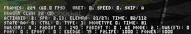
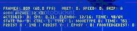

3.基本的trigger指令
本页内容由net教授撰写. 由【softmgr】整理编辑.
首先我们来了解一点基本的trigger指令
statetype 或p2statetype= S or C or A or L
statetype是自己的状态，p2statetype是对手的状态。p2就表示是对手的，下面都是这样
S是站立，C是蹲下，A是空中，L是倒地
（也就是stand，crouch，air，lie的首字母）
Movetype或p2movetype = I or A or H
这是动作状态，I是通常，A是攻击，H是受击（被打或防御都算受击）
stateno 或p2stateno = 数字
state号和对手的state号。State号就可以看作是动作的代号。
ctrl = 0 or 1；
判断是不是处于可控制状态，下面的文章里有详细说明
canrecover = 0 or 1 ；
判断是不是可以受身、0=受身不可、1=受身可能
P2dist x或p2bodydist X 与对手的水平方向距离
P2dist y 或p2bodydist Y 与对手的垂直方向距离，这2个下面有详细说明
Backedgebodydist 与背后版边的距离
Frontedgebodydist 与面前版边的距离
random 随机数，下面有说
movecontact攻击接触到对手（打到或被防）
movehit 攻击成功击中对手
moveguarded攻击被对手防住
life或p2life 自己或对手的血量
power 能量值。
enemy, 以敌人为对象，读取敌人的数值。双人战时指定较远的那个敌人
enemynear, 和上面差不多，只不过是双人战时读取离自己较近的敌人。
比如Trigger1 = enemy,power < 1000，就是当对手的能量值小于1000时
Stateno的查找
Ai开关写好后，我们就正式开始写ai。
但要写ai，我们先要知道什么招对应的是什么state号。State号就是各种招式和动作的代号。
那如何找出招式的stateno呢？有2种方法
注：下面有时会用数字表示方向，至于什么数字表示啥方向，看你的小键盘就知道了，比如624b就是前下后b
1 看cmd
Cmd文件本身就是定义“按什么键出什么招”的文件。如果你对人物的出招比较熟，可以看cmd查找相应的stateno
举个例子：
比如要查找下前a这招的stateno，我们先打开cmd。
[Command]里的招式定义部分应该会读了吧，不懂的回去复习episode 1。
很明显，下前a就是这个（df是过渡）
[Command]
Name = "236a"
Command = ~D, DF, F, a
Time = 14
然后我们看到这个招被定义了一个名字叫“236a”，然后我们搜索这个236a
可以找到下面那段
[State -1]
Type = ChangeState ;这个表示切换状态，即做动作，前面说过了
Value = 1300 ;这就是state号，不过value也有可能写在下面
TriggerAll = Var(59) = 0
TriggerAll = Command = "236a"
TriggerAll = StateType != A
Trigger1 = Ctrl
其他先不用管，我们要知道的就是下前a这招的stateno就是1300
2 进入debug模式
打开winmugen\data目录里的mugen.cfg
查找字符串“debug”
找到这段
[Debug]
;Set to 0 to disable starting in debug mode by default.
Debug =0
把Debug = 0，改为Debug = 1即可。
然后进入mugen，进入训练模式，用1p选你所要修改ai的角色，会发现左下角出现了不少字。

注意到那个“STATE NO：”了么？这时你只要出招，这招的stateno就会自动出现。
common1.cns
有时我们会发现，有些基本动作的state在cmd里没有定义指令。比如防御，跳跃啥的。
因为这是定义在common的cns里的。哪个是定义common的cns呢？要看def
def里一般有这行
stcommon = common1.cns
但这个common1.cns，可能在人物目录里找不到
如果我们在这个人物的文件夹底下没找到这个common1.cns，那这个文件就是指winmugen\data底下的common1.cns
这是一个系统默认的通用动作定义文件。定义的是一般人物都有的防御，跳跃，前进等动作。具体怎么定义这里不深究，我们只要知道common1.cns定义的一些动作的state号就行。
写几个比较重要的
0 站立
20 步行
40 跳跃启动(在地面) 仅在人物离地时
100 向前跑/急冲
105 急退
120 防御-启动
130 防御-站-摆势
131 防御-蹲-摆势
132 防御-空-摆势 （此时人物做出防御动作，但并未受击）
140 防御-站-结束
141 防御-蹲-结束
142 防御-空-结束
150 防御-站-状态
151 防御-蹲-状态
152 防御-空-状态
-------受创--------（5000-5300）
5110 躺倒
5120 起身
5121 opt 起身 （有些人物有2种起身方式）
5201 恢复近地 （地面受身）
5210 恢复近空 （空中受身）
5300 眩晕
简易ai的制作以及ai的基本立回
个人推荐写ai时，不怕麻烦的话，立回，连段，压制，起攻，插动等等最好分开写，且加上注释，这样的话比较清晰。
首先介绍一下立回的含义：就是敌我双方都能自由行动的状态，没有一方被压制，被连段，或处于倒地等各种行动不能的状态。
在ai上怎么体现呢？我们先来看一个立回ai的代码
[State -3,立x]
type = ChangeState
value = 200
triggerall = Var（59）= 1 && roundstate = 2 ;ai开关开启且对局进行中
triggerall = Statetype != A && p2statetype !=L;不在空中且对手不是倒地
triggerall = p2movetype != H ;对手不是受击状态，表明不是在连段中
triggerall = ctrl ;可以控制，即可以自由行动
trigger1 = P2dist X = [0,40] ;在与对手中心距离在0到40像素的情况下
trigger1 = random < 300 ;随机数小于300（给出招加一个概率）
这就是立x的立回ai
立回的重要特征是ctrl（可控制，即可以自由行动）以及p2movetype !=H（对手不受击）
P2statetype !=L不加也可以，因为一般对手倒地时，系统是判断p2movetype=H的
修改一个ai的时候，经常会看到原ai作者把连段和立回的一起写。
像这样：
[State -1, 236B]
type = ChangeState
triggerall = var(59) > 0 && RoundState = 2 && !ishelper && var(41)%10 = 0
triggerall = StateType = S
triggerall = p2bodydist X = [80,150]
trigger1 = Ctrl && random <=300
trigger2 = stateno = 230 && movecontact
value = 1210
其中trigger1是立回，trigger2是连段。
但是由于trigger1里面只有ctrl，没有p2movetype !=H，所以这个236B可能会影响某些目押连段。
关于ctrl状态
Ctrl即可以自由行动的状态，那什么情况下ctrl = 0呢
1 出招的时候
2 受击的时候（无论防御，还是直接被打）
3 倒地的时候以及其他不能控制的时候
写立回时的ai不加ctrl会产生很严重的后果。
如果是攻击动作，就拿上面的立x来说，写ai时不加ctrl的话，那只要符合条件（比如上文里距离在0到40之间），那在这种情况下，会不断的出立x，而且会在立x动作没有完成甚至还没产生判定的情况下，再强行重头做立x的动作。
你就会发现ai会在这个距离内鬼畜般的重复做立x的动作，而且很可能打不中人。（因为很可能判定还没出来又重新出立x了），这时游戏可能会卡。
即使被对手在这时候命中，也不会做被打中的动作，还是强行出立x。
如果是防御动作没加ctrl，那在出任何招的过程中，都能无视硬直强行收招防御，甚至被打了，都能强行转入防御，一个bug人物就此诞生。
所以写立回ai的时候，一定要加ctrl。但连段“取消”的时候，不能加ctrl（关于连段，下个教程会说明）
关于p2dist和p2bodydist
P2dist表示p1与p2两者中心之间的相对距离，p2bodydist表示2者人物框之间的相对距离，一般来说差别不大。除非某些特殊情况下，一般2者都可以随便用。
一般情况下推荐用p2bodydist。某些特殊情况才用p2dist
P2dist有p2dist x和p2dist y之分，p2bodydist也一样。
P2dist x表示x方向，即水平方向的距离，y则表示垂直方向的距离
P2dist x的数值大于0 表示p2在p1前面，小于0就是在后面
P2dist y的数值大于0表示p2在p1下面，小于0表示在上面
另外自己和对手相对于地面的绝对高度可以用pos Y和enemy, pos Y表示，enemy也可以换成enemynear，表示离自己最近的敌人，在双人赛里有用。
用enemy和enemynear不只可以读取对手的位置，可以读取对手的各种参数，在ai中可以用来判断对手状态，很有用。
以上的各种参数具体请参阅trigger表
关于random（随机数）
系统每一F都会产生一个0到999的随机数，这就是random，每F都在变化
random是控制概率用的，random<300，就是每F有30％的概率。Random>700也是30％概率。Random<=1000就是100％的概率，random=500就只有千分之一的概率。（注意不是random<=500）
比如那个立x的立回ai就是当对手在0,40之间，每F都有30％的概率出立x。
剩下70％的可能就是做其他动作，包括发呆
用debug模式测量距离
所谓简易ai，就是知道且只知道在什么距离下出什么招的ai。
所以我们要做简易ai，就要知道招式的有效距离为多少。按距离出招也是立回的最主要模式
那怎么才能测出招式的距离呢？这时我们就继续使用万能的debug模式。
在state -2或者state -3中加入DisplaytoClipboard的type
当然只是显示距离的话，写在哪里都可以，但要显示其他var或fvar等变量的话
一般ai是写在state -3里就写在state -3的最下面。
没state -3就写在-2里面，不过要写在所要显示的var的定义指令下面
总之现在只是显示距离的话，不用管这么多。没有的话就随便写，有现成的type = DisplaytoClipboard的指令就在这上面直接改就好了
只是要显示距离的话，不必那么复杂
直接复制进去下面的指令就够了（其实下面推荐用p2bodydist x和p2bodydist y，但图是显示p2dist的，懒得再截一幅图了）
[State -2, Display] ;或者state -3
type = DisplaytoClipboard
trigger1 = 1
text = "p2dist x : %d | p2dist y: %| eposY : %d| frontedgedist: %d"
params = ceil(p2dist x) , ceil(p2dist y) , ceil(enemy,pos Y), ceil(frontedgedist)
text是屏幕上显示的文字，%d则与下面的params一一对应。ceil是取整，因为%d对应的是整型变量（整数）。
而%f可以对应浮点型变量（小数）。这里用不着。
Frontedgedist表示自己离前面版边的距离，在版边的行动中有作用
然后以1p进入mugen的训练模式，就可以看到左下方的信息中最后1条就是刚才添加的信息。

主要看p2dist x。在不同距离出招，看能否打中，记下能打中的p2dist x的值的范围。
投技的距离判断
一般“前+强攻击”这种形式发生的投技，cmd里一般在人用指令已经规定好距离的。（因为不在投技范围内按前＋强攻击，就会变成强攻击）
找到这个距离写在ai里即可
有些投技是用“ab”这种方式按的，或者是指令投，只好自己在debug模式里试试距离了
注意写投技的立回ai时通常要加一句
Triggerall = p2movetype != H
因为决大多数投技，投不了在防御硬直中的对手。
Ai里立回招式的书写顺序
Ai里立回招式的书写顺序也有讲究。因为系统读ai的时候，每一F都是从上往下读的。这样会造成一些问题。
比如
[State -3,立x]
type = ChangeState
value = 200
triggerall = Var（59）= 1 && roundstate = 2
triggerall = Statetype != A
triggerall = p2movetype != H
triggerall = ctrl
trigger1 = P2dist X = [0,40]
trigger1 = p2dist y = [-30,30]
trigger1 = random < 300
[State -3,立a]
type = ChangeState
value = 230
triggerall = Var（59）= 1 && roundstate = 2
triggerall = Statetype != A
triggerall = p2movetype != H
triggerall = ctrl
trigger1 = P2dist X = [0,30]
trigger1 = p2dist y = [-30,30]
trigger1 = random < 300
比如这样写的话。你会发现ai在水平距离0，40的范围里只会出立x，不会出立a。
因为当满足立a的条件时，必定满足立x，而ai是自上而下读取的，所以条件满足时必定先执行立x。
如果我们把立a写在立x前面呢，那水平距离在0，30范围内会出立a，而水平距离在30，40之间时会出立x
但如果我们把立a的random<300的条件，改成random = [300,600]，那在0,30的距离内，就既可能出立a也可能出立x了。
注意：此处原文描述存在错误。random应该是每次调用都会返回不一样的结果，而并非文中提及的每帧为一个结果，所以实际上立a依然可以执行（例如立x的随机数为400，立a的随机数为100）。若希望做到文中描述的效果，需要把random的结果赋值给变量来实现。
如果要做ai等级的话，通常就是用random和控制ai等级的变量来调整出招几率
比如用var(59)作为ai等级，那可以给某招加上
Triggerall = random <= 50*var(59)
这样var（59）越高，出招几率就越高了。
所以我们写立回ai的时候
原则上把使用条件苛刻的招写在前面（如超杀等）
凹技写在防御前面
主力技可以适当上调
其他普通技啥的写在后面
另外如果控制好距离差距的话，近距离用轻拳，轻脚或投，中距离用中，重拳脚，远距离才用飞行道具。这样对于几个攻击距离不太相近的招而言，顺序也不太重要。
也不一定要死套这个原则，有时具体情况要具体分析，可以看一个现成的ai。最主要的是要明白这个招是干什么用的，这样才能合理确定这招应该写在ai的哪个位置。